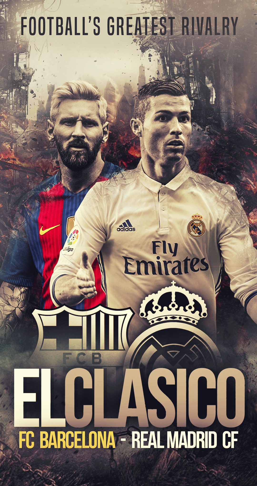
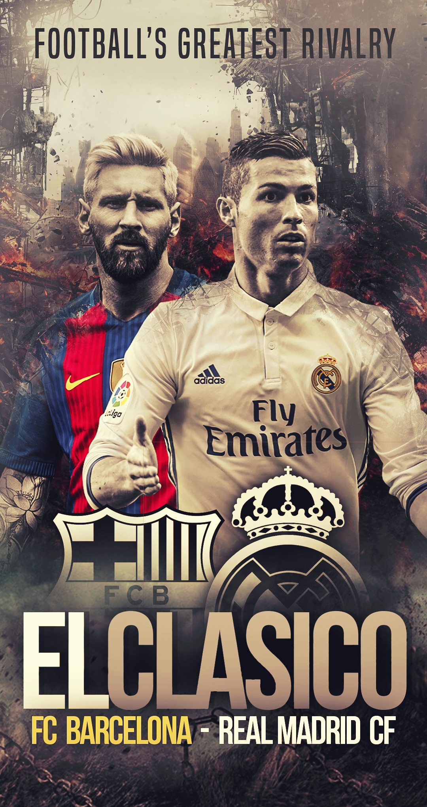

History of Real Madrid Club
Real Madrid Club de Fútbol, commonly referred to as Real Madrid, is a professional football club based in Madrid, Spain. Founded on 6 March 1902 as Madrid Football Club, the team has traditionally worn white home kits since inception. The club has been one of the most successful in Spanish and European football history.
Real Madrid holds the record for the most European Cup/Champions League titles, with 15 trophies. The team plays its home matches at the Santiago Bernabéu Stadium, one of the most famous stadiums in world football.
In addition to its remarkable achievements in European competition, Real Madrid has also won numerous domestic titles in Spain, including La Liga and the Copa del Rey.
The club's global fan base and rich history make it one of the most prestigious football clubs in the world. Known for its fierce rivalry with Barcelona, Real Madrid continues to set standards in football excellence.
Real Madrid has won more Spanish top-division (La Liga) championships (36) than any other Spanish side. The club has also won the Copa del Rey, the main Spanish cup competition, 20 times and the Supercopa de España (Spanish Super Cup) 13 times. It won UEFA Cup twice, in 1985 and 1986.
Real’s local competition is Atlético Madrid, but the club’s biggest rivalry is with FC Barcelona. The tension between the football clubs from Spain’s two biggest cities was amplified by a struggle between the teams in the 1950s to sign Di Stéfano, who reneged on a proposed deal with Barcelona to sign with Madrid, helping Real become a football power in the 1950s and ’60s. Matches between Barcelona and Real Madrid are known as El Clásico (“The Classic”) and are watched throughout Spain, in large part because the two sides symbolize for many the ongoing political and cultural difficulties between Castilian (Real) and Catalonian (Barcelona) Spain.
From the late 1990s Real Madrid spent enormous sums on luring some of the world’s most famous foreign players to the club, where they are known as galácticos (“superstars”). Those players were often the most expensive (by transfer fee) footballers in the world and included such stars as David Beckham, Luis Figo, Ronaldo, Zinedine Zidane, Kaká, Cristiano Ronaldo, and James Rodriguez. Sergio Ramos and Iker Casillas are other notable players of this era. Following his departure from Paris Saint-Germain after the 2023–24 season, Kylian Mbappé joined Real Madrid.